Прежде, чем скомпилировать Ваш первый документ, Вы должны задать кодировку, используемую редактором ("Настрока/Настроить Texmaker/Редактор/Кодировка"). Затем Вы должны использовать ту же кодировку в преамбуле ваших документов (например : \usepackage[cp1251]{inputenc}, если Вы используете в редакторе русскую кодировку Windows)
Внимание : во время открытия файла, Вы получите предупреждение, что документ не может быть правильно раскодирован в кодировке по умолчанию и программа позволит Вам выбрать другую кодировку (не меняя при этом кодировку по умолчанию) .
Texmaker не может скомпилировать Ваши документы, если путь к командам LaTeX задан неверно.
Установки по умолчанию должны работать с новыми и стандартными дистрибутивами LaTeX, но Вы можете изменить их ("Настройка Texmaker" -> "Команды"). Чтобы изменить команду, просто кликните на кнопку в конце соответствующей строки и выбрать команду в окне выбора файлов : texmaker сам автоматически подправит синтаксис команды.
Символ % представляет имя файла без расширения, а символ @ будет заменен текущим номером строки.
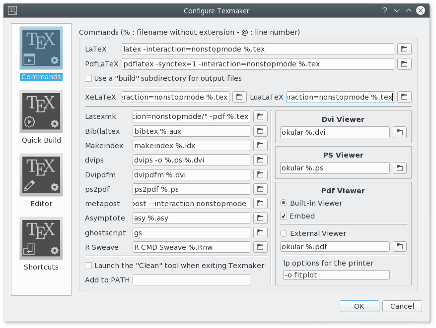
Проверка орфографии использует словари OpenOffice.org (версии 2.x). Только французский, английский, немецкий, испанский и итальянский словари, имеющие лицензию GPL распространяются вместе с Texmaker.
Вы можете скачать другие словари здесь: http://wiki.services.openoffice.org/wiki/Dictionaries
Чтобы настроить проверку орфографии : "Настроить Texmaker" -> "Редактор" -> "Spelling dictionary" -> кликнуть на кнопку в конце строки чтобы выбрать файл словаря.
Предупреждение : Проверка орфографии начинается с позиции курсора, а не с начала документа.
Во время набора, если нет ошибок, текущее слово подчеркнуто красной чертой. Правый клик на слово открывает контекстное меню, в котором есть несколько предложений по замене. Кликните на выбраном слове, чтобы выполнить замену.
Стандартные командц (вырезать, скопировать, найти) можно выполнить через пункт меню "Правка" и панель инструментов "Правка".
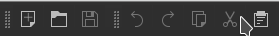
Чтобы задать преамбулу вашего документа, Вы можете использовать помошника "Быстрый старт" (Меню "Помошник").
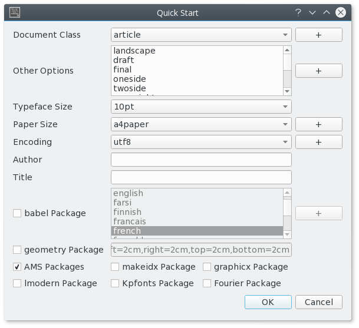
Этот диалог позволяет Вам задать главные особенности Вашего документа (класс, размер бумаги, кодировку...).
Замечание : Вы можете добавить другие возможности кликнув на кнопку "+". Все ваши установки будут сохранены.
Вы можете также напечатать свою собственную модель преамбулы в редакторе : Используя команды "Копировать/Вставить" or "Сохранить как", Вы можете использовать ее для новых документов.
Чтобы начать новую часть документа (раздел, подраздел...) с помощью Texmaker, просто используйте этот выпадающий список в панели инструментов :
Это приведет к открытию диалогового окна, которое позволит Вам задать стиль очередной части (раздела, подраздела...).
Замечание : панель "Структура" обновится автоматически.
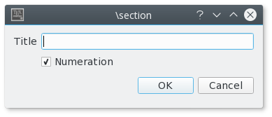
Левая панель "Структура" позволяет Вам быстро перемещаться между частями Вашего документа. Все что Вам нужно сделать это кликнуть на любой пункт (метку, раздел...) и вы перенесетесь к началу соответствующей области в редакторе.
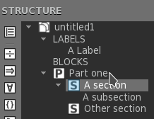
панель "Структура" автоматически обновляется при наборе документа. Вы также можете "Обновить структуру" (меню "Правка") в любой момент.
В каждом файле, для ускоренной навигации можно использовать три закладки : просто кликните слева от номера строки чтобы добавить или удалить закладку. Когда Вы уже задали три закладки, Вы должны удалить одну из них, чтобы добавить новую. Чтобы перейти к строке, отмеченной заклдкой в редакторе, просто кликните на кнопку с номером закладки в строке состояния.
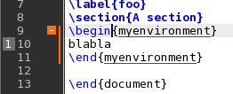
Вы можете быстро задать формат части Вашего текста следующим образом :
Дополнительные возможности: выделенный текст может быть быстро заключен в определенное окружение. Например: кликнув на кнопку "B" после выделения слова "Здравствуй" , Вы получите код: \textbf{Здравствуй}.
Эта возможность доступна для всех окружений помеченных "[selection]" в меню "LaTeX".
Обычные команды "spacing" доступны в меню "LaTeX" и "Математика". Чтобы быстро вставить команду LaTeX "new line", Вы можете использовать соответствующую команду панели инструментов (сочетание клавиш : Ctrl+Alt+return)
Код обычного окружения списка можно быстро вставить через меню "LaTeX-List".
Замечание : сокращение для команды "\item" это Ctrl+Alt+H.
Код LaTeX для окружения "Tabular" можно быстро вставить с помошником "Tabular" (меню "Помошник") :
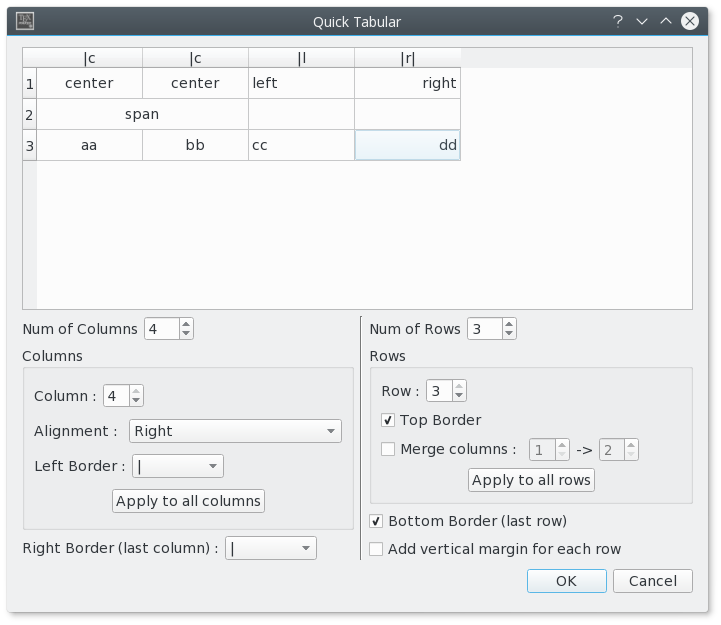
Вы можете задать главные характеристика вашей таблицы.
Замечание : этот диалог позволяет Вам вставлять код прямо в ячейки.
Соответствующий код LaTeX автоматически вставляется в редактор.
Чтобы помощь Вам вставить код окружения "tabbing", можно использовать помошника "Быстрый разделитель" (меню "Wizard") :
Чтобы вставить в Ваш документ картинку, просто используйте команду "\includegraphics" в меню "LaTeX". Потом кликнете на кнопку справа от строки ввода чтобы выбрать графический файл.
Замечание : если вы кликните на кнопку "+", будет автоматически добавлно окружение "figure" LaTeX.
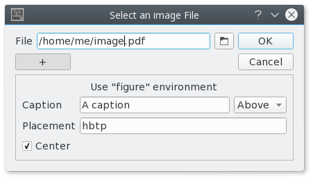
Этот выпадающий список на панели инструментов позволяет Вам быстро вставить код "label", "cite", "ref", "footnote" и др.
Замечание : метки (label) использованные в вашем документе показываются в панели "Структура".
Дополнительная возможность:для команды \ref, диалог позволяет Вам непосредственно выбрать метку "label".
Вы можете включать и выключать окружение "in-line math" кнопкой "$$" на панели инструментов (сочетание клавиш : Ctrl+Alt+M) или в меню "Математика". Сочетание клавиш для окружения "display math": Alt+Shift+M.
Панель инструментов "Математика" позволяет Вам вставить наиболее ходовые математические формулы (frac, sqrt...)
С панелью инструментов "символы" на панели "Структура", Вы можете вставить коды 400 математических символов и левые и правые скобки (просто кликнув на одну из кнопок "символы" на панели "Структура")
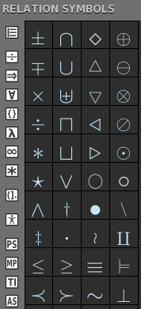
Дополнительная возможность: Панель инструментов "favorites symbols" (*) позволяет Вам создать свою собственную панель символов.
Вы можете также задать формат вашего математического текста через меню "Математика".
Для окужения "array", помошник (похожий на помошника "Быстрая таблица") доступен из меню "Помошник". С этим помошником, Вы можете выбрать окружение : array, matrix, pmatrix.... Ячейки можно заполнять напрямую.
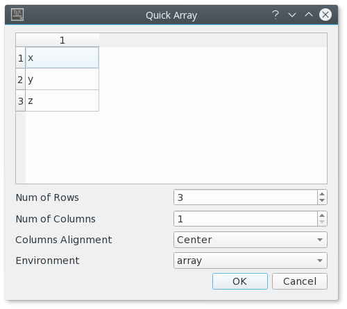
Отметки "•", автоматически вставляемые некоторыми командами Texmaker, позволяют Вам перемещаться прямо к следующему полю в созданной структуре используя клавишу "Tab" ("Shift+Tab" для перемещения в обратном направлении).
Замечание : Вставление табуляций с помощью клавиши "Tab" не работает в строках, содержащих метку "•".
Самый простой способ скомпилировать документ это использовать команду "Быстрая сборка". Вы можетед задать последовательность команд используемую командой "Быстрая сборка" в диалоге "Настроить Texmaker".
Для запуска команды из панели инструментов : сначала выберете команду, затем нажмите кнопку "Run".
Вы также можете запускать каждую команду одна за другой (сочетания клавиш : F2...F12 - смотри меню "инструменты").
Замечание : команда "Очистить" в меню "Инструменты" позволяет Вам удалить файлы (dvi, toc, aux...) созданные при сборке (за исключением файлов ps и pdf).
Предупреждение : все Ваши файлы должны иметь расширение и Вы не должны собирать безымянные файлы или файлы содержащие пробелы в имени..
При выполнении команды "Быстрая сборка", Файл сообщений показывается в панели "Messages / Log file". При щелчке на число в колонке "Line", курсор перемещается на соответствующую строку в редакторе и показывается сообщение об ошибке.
Замечание : количество ошибок и предупреждений LaTeX показывается перед выводом Файл сообщений.
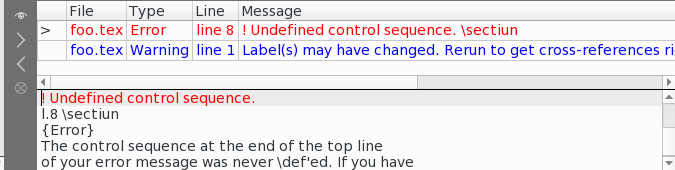
Команды "Next Latex Error" и "Previous LaTeX Error" позволяют перейти к ошибкам, обнаруженным при сборке :
Если Вы добавите опцию "-synctex=1 к команде pdflatex, встроенный просмотрщик pdf будет перемещаться прямо к позиции в pdf-файле, которая соответствует текущей строке в исходном файле (La)TeX.
И наоборот, при щелчке правой кнопкой мыши на слово во встроенном просмотрщик pdf (всплывающее меню), редактор будет перескакивать к соответствующей строке исходного файла.
Замечание : если Вы нажмете клавиши ctrl+space (ctrl+$ на MacOsX) во встроенном просмотрщик pdf, то фокус ввода перемещается в окно редактора.
Чтобы использовать xelatex с Texmaker, просто замените команду pdflatex на xelatex.
Texmaker позволяет Вам сворачивать и разворачивать все такие блоки как части, главы, разделы команды окружения и др. в Вашем документе. Чтобы сделать это, Нужно установить курсор на первую строку блока. Потом вы просто щелкаете на иконку "-" чтобы свернуть соответствующий блок.
Замечание : Вы можете также использовать всплываюшее меню чтобы переместиться прямо к концу блока.
Texmaker позволяет работать с документами, разделенными на несколько файлов.
Чтобы включить файл в свой документ, просто используйте команду "\include{file}" в меню "LaTeX". Файл появится в панели "Структура". При щелчке на его имени, Texmaker откроет его.
Затем, Вы можете задать "главный документ" в меню "Настройка". Все команды меню "Инструменты" будут применяться только к этому документу даже при работе с дочерними документами (даже если Вы закроете главный документ).
Вы можете легко переключаться между главным документом и текущим документом с использованием специальной кнопки (прямо над кнопкой "Bold").
Замечание : Вы можете выйти из режима "главного документа" с помощью меню "Настройки".
При открытии документа .tex, обнаруженные .bib автоматически анализируются и библиографические ссылки добавляются в авто-расширение. Список библиографических ссылок можно обновить используя пункт "Refresh Bibliography" меню "Правка".
Для файлов .bib, меню "Библиография" позволяет вам прямо вставлять ссылки, соответствующие стандартным типам документов.
Замечание: дополнительные поля можно автоматически удалить командой "очистить" меню "Библиография".
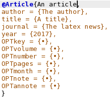
Texmaker позволяет Вам вставить ваши собственные командц (сочетания клавиш : Shift+F1...Shift+F10). эти команды определяются в меню "Пользователь - Метки пользователя".
Замечание :
Вы можете также запустить ваши собственные команды (сочетания клавиш : Alt+Shift+F1...Alt+Shift+F5). Эти команды определяются в меню "Пользователь - Команды пользователя" и могут быть запущены через панель инструментов (кнопка "Run") .
Некоторые основные команды пакетов Pstricks/Metapost/Tikz/Asymptote могут быть вставлены с использованием кнопок "PS", "MP", "TI" и "AS" в панели "Структура".
Команды "mpost" и "asy" можно запустить через меню "Инструменты" или кнопку "Run".
Если Вы вышли из программы без закрытия открытых документов, texmaker автоматически записывает имена этих документов. Командой "Restore previos session" в меню "Файл", все эти файлы можно переоткрыть одним щелчком мыши.
некоторые просмотрщики файлов .dvi могут перескакивать (и визуально подсвечивать) позицию в DVI-файле, которая соответствует строек с определенным номером в исходном файле (La)TeX.
Чтобы использовать эту возможность, Вы можете воспользоваться символом @ в синтаксе команд dvi-просмотрщика ("Настроить Texmaker" -> "Команды").
Например ("Прямой поиск"):
texmaker file [-master] [-line xx]
с параметром "-master", документ будет автоматически определен как "главный документ".
с параметром "-line xx", Texmaker после загрузки документа спросит Вас хотите ли Вы переийт к строке xx.
Сочетания клавиш по умолчанию (*:могут быть изменены - "Настроить Texmaker" -> "Редактор") :